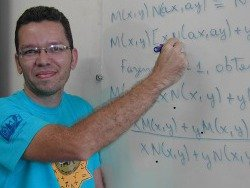
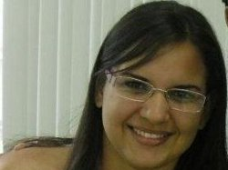
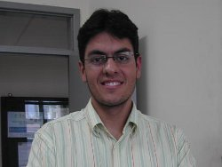

Tutor
 |
- Nome: Daniel Cordeiro de Morais Filho
- Email: daniel@dme.ufcg.edu.br
- Titulação: Doutor em Matemática na UNICAMP, Pós-Doutor em Matemática na Rutgers University
|
Bolsistas
|
- Nome: Arthur Cavalcante Cunha
- Email: arthur@dme.ufcg.edu.br
- Data de entrada: Fevereiro de 2011
- Iniciação Científica: Integral de Lebesgue e Aplicações
- Orientador IC: Marco Aurélio Soares Souto
- Projetos de IC: 2011, 2013
|
 |
- Nome: Emanuel Carlos Albuquerque Alves
- Email: emanuel.carlos.pb@gmail.com
- Data de entrada: Agosto de 2013
- Iniciação Científica: As Origens do Cálculo Diferencial e Integral
- Orientador IC: José de Arimatéia Fernandes
|
|
- Nome: Felipe Barbosa Cavalcante
- Email: felipeb@dme.ufcg.edu.br
- Data de entrada: Fevereiro de 2012
- Iniciação Científica: Introdução à Teoria de Galois
- Orientador IC: Antônio Pereira Brandão Júnior
- Projetos de IC: 2013, 2013-2014
|
|
- Nome: João Paulo Formiga de Meneses
- Email: jpaulo@dme.ufcg.edu.br
- Data de entrada: Agosto de 2013
- Iniciação Científica: Otimização: Condições de Otimalidade e Elementos da Análise Convexa
- Orientador IC: Jefferson Abrantes dos Santos
|
|
- Nome: Geovany Fernandes Patricio
- Email: geovany@dme.ufcg.edu.br
- Data de entrada: Janeiro de 2012
- Iniciação Científica: Um estudo sobre fractais, estudando e entendendo esses estranhos objetos
- Orientador IC: Daniel Cordeiro de Morais Filho
- Projeto de IC: 2013
|
|
- Nome: Juarez Cavalcante Brito Júnior
- Email: juarez@dme.ufcg.edu.br
- Data de entrada: Fevereiro de 2011
- Iniciação Científica: Introdução à Teoria dos Números
- Orientador IC: José Iraponil Costa Lima
- Projeto de IC: 2013
|
|
- Nome: Juliérika Veras Fernandes
- Email: julierika@dme.ufcg.edu.br
- Data de entrada: Fevereiro 2012
|
 |
- Nome: Matheus Cunha Motta
- Email: matheus@dme.ufcg.edu.br
- Data de entrada: Junho de 2010
- Iniciação Científica: Leis de Conservação
- Orientador IC: Rosana Marques da Silva
- Projetos de IC: 2011, 2012, 2013
|
|
- Nome: Renato de Melo Filho
- Email: renato.melo.fh@dme.ufcg.edu.br
- Data de entrada: Novembro de 2013
|
|
- Nome: Thiago Felipe da Silva
- Email: thiagof@dme.ufcg.edu.br
- Data de entrada: Fevereiro de 2012
- Iniciação Científica: Grupos Solúveis e Nilpotentes
- Orientador IC: Antônio Pereira Brandão Júnior
- Projeto de IC: 2014
|
|
- Nome: Tiago Alves de Souza
- Email: tiagoalves@dme.ufcg.edu.br
- Data de entrada: Novembro de 2013
|
 |
- Nome: Weslley Ferreira da Silva
- Email: weslley@dme.ufcg.edu.br
- Data de entrada: Novembro de 2013
|
Egressos

Existem experiências que exigem bastante dedicação e interesse,
mas cujos benefícios ficam por toda vida; certamente, participar do
Grupo PET-Matemática UFCG é uma dessas experiências. Ter sido
integrante de um grupo tão bem orientado, tão produtivo e que tem
integrantes sempre dispostos a aprender algo a mais, foi uma fase
extremamente enriquecedora para minha formação acadêmica. Sou grato
por toda atenção devotada a mim durante esse contínuo processo de
trabalhos e fico feliz em saber que outros graduandos em Matemática
estão tendo a satisfação de desfrutar de tudo que o PET proporciona,
assim como eu tive. Encerro ressaltando minha sincera gratidão ao
Grupo PET-Matemática UFCG pelo aprendizado proporcionado.
Alan de Araújo Guimarães
Período no PET: Janeiro de 2009 até Março de 2013.
Projeto de IC: 2011
Atualmente é mestrando no Programa de Pós-Graduação em Matemática
da UFCG [Curriculum Vitae].
|

André Felipe Araújo Ramalho
Período no PET: Agosto de 2010 até Janeiro de 2014.
Projeto de IC: 2011
Atualmente é estudante do curso de graduação em Matemática da UFCG.
|

Foi uma grande honra ter participado do Grupo PET Matemática UFCG,
ter sido tutorando do Prof. Dr. Daniel Cordeiro de Morais Filho foi muito
gratificante, pois esse Programa de Educação Tutorial (PET) ampliou e colocou
em prática os meus conhecimentos. Além disso, o PET me fez crescer como
estudante e como ser humano, e isso não tem preço. Por isso, só tenho a
agradecer aos meus ex-colegas petianos pelo companheirismo nas horas de
estudo e ao meu ex-tutor, não só pela excelente orientação, mas pelo
profissional de mão cheia que ele é, além de ser uma pessoa muito
preocupada com os seus alunos. Só quero ressaltar que os inúmeros
benefícios que o PET me proporcionou está refletindo de forma bastante
significativa na minha vida.
Jogli Gidel da Silva Araújo.
Período no PET: Janeiro de 2009 até Dezembro de 2011.
Projeto de IC: 2011
Mestre em Matemática pelo Programa de Pós-Graduação em
Matemática da UFCG. Atualmente é doutorando no Programa de
Pós-Graduação em Matemática da UFPB/UFCG
[Curriculum Vitae].
|

Todos os dias vejo os benefícios que o PET trouxe para minha vida
acadêmica. Nele tive a oportunidade de expandir meus conhecimentos e
trabalhar com diversas atividades tais como monitoria, organização e
participação de eventos, pesquisas etc.
Os desafios foram muitos mas as recompensas foram ainda maiores. No PET
aprendi a ter mais responsabilidade e compromisso com os outros, ja que
cada ação sua influencia no grupo.
Sem dúvida nenhuma os Petianos são alunos que buscam algo mais, querem ir
alem da sala de aula e pensam em grupo.
O PET é, sem dúvida, um programa completo.
Lorena Brizza Soares Freitas
Período no PET: Janeiro de 2009 até Dezembro de 2011.
Projeto de IC: 2011
Mestre em Matemática pelo Programa de Pós-Graduação em
Matemática da UFPE. Atualmente é doutoranda no Programa de
Pós-Graduação em Matemática da UFPE
[Curriculum Vitae].
|

De maneira geral, os estudantes de graduação sentem a necessidade de
expandir seus horizontes, de qualificar seu currículo e de interagir com
os seus pares. Neste sentido, o impacto do Grupo PET-Matemática UFCG foi
substancial à consolidação do meu aprendizado, haja vista a relevância da
nossa produção e as oportunidades de trabalho que nos são apresentadas.
Ademais, estou convicto de que o Grupo PET-Matemática UFCG estará
permanentemente disponível aos graduandos em Matemática que buscam
distinção e dispostos a conquistar responsabilidades.
Michell Lucena Dias
Período no PET: Agosto de 2010 até Outubro de 2013.
Projeto de IC: 2013
Atualmente é mestrando no Programa de Pós-Graduação em Matemática da UNB
[Curriculum Vitae].
|
Durante todo o período como membro do grupo PET-Matemática-UFCG
pude aprender muito e realizar diversas atividades de fundamental
importância em minha formação acadêmica. É mister, pois, deixar
aqui meus agradecimentos aos ex-colegas e ao ex-tutor, Daniel
Cordeiro, por todo aprendizado, o qual levarei comigo pelo resto
da vida, e desejar que o grupo permaneça beneficiando, não só os
alunos de matemática, mas também todos os que usufruem das suas
atividades de ensino e extensão.
Paulo Romero Ferreira Filho
Período no PET: Maio de 2011 até Janeiro de 2014.
Projetos de IC: 2011-2012, 2013-2014
Atualmente é mestrando no Programa de Pós-Graduação em Matemática
da UFCG
[Curriculum Vitae].
|
Ex-Bolsistas
|
- Nome: Maciene Maria dos Reis
- Data de entrada: Fevereiro de 2011
- Egresso: Fevereiro de 2012
|
|
- Nome: Marcella Luanna Da Silva Lima
- Data de entrada: Janeiro 2009
- Egresso: Março de 2010
|
|  |
- Nome: Mario Sérgio Alves Ferreira
- Data de entrada: Maio 2010
- Egresso: Dezembro de 2011
|
|  |
- Nome: Sandra Maria Diniz Silva
- Data de entrada: Janeiro de 2012
- Egresso: Abril de 2013
|
|  |
- Nome: Ygor Dias A. Torquato
- Data de entrada: Agosto 2010
- Egresso: Junho de 2011
|
Ex-Bolsistas com menos de um ano no programa
- Adailson Ribeiro da Silva
- Stéfane Kelly Gomes de Paula
- Wuallison Firmino dos Santos
|